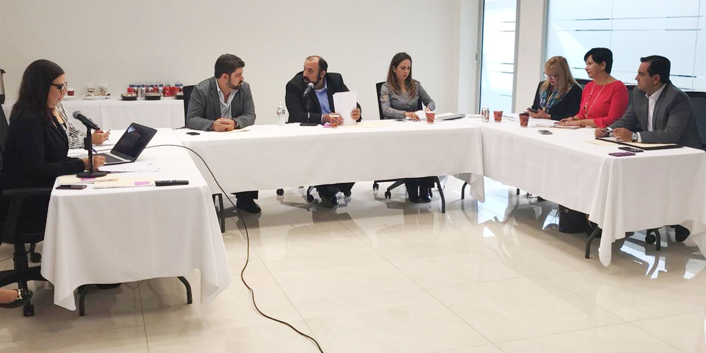
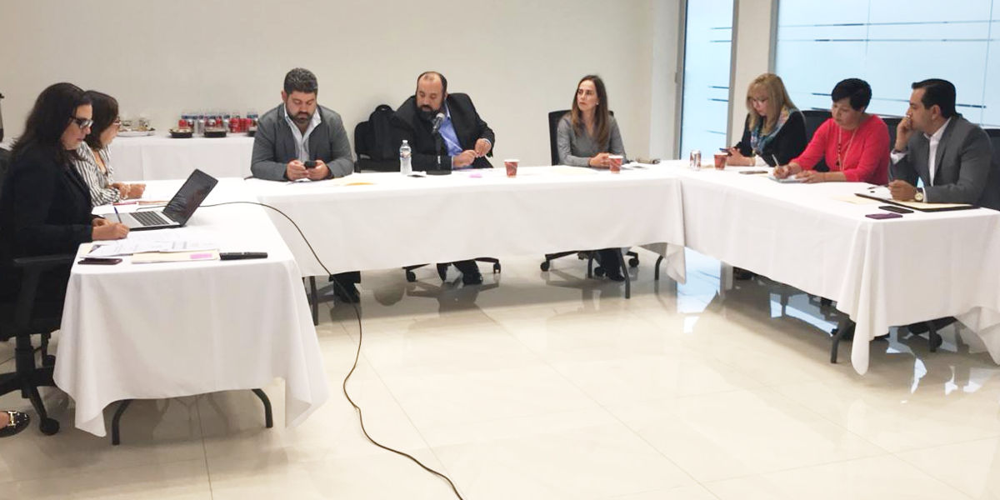

Saltillo, Coahuila a 13 de Septiembre de 2018
Como parte del orden del día de la Sesión, la Secretaria Técnica presentó el Anteproyecto de Presupuesto para el Ejercicio Fiscal 2019, el cual fue aprobado por unanimidad de votos de los integrantes del Órgano de Gobierno.
Al respecto, se instruyó a la Secretaria Técnica remitir el Anteproyecto de Presupuesto a la Secretaria de Finanzas del Gobierno del Estado para su incorporación en el Proyecto de Presupuesto de Egresos 2019.

Asimismo, fue puesto a consideración del Órgano de Gobierno el Plan de Trabajo de la Secretaría Ejecutiva del Sistema Anticorrupción del Estado de Coahuila, el cual de igual forma fue aprobado por unanimidad.
Fue dispuesto por el Órgano de Gobierno que dicho acuerdo sea turnado para su publicación en el Diario Oficial del Gobierno del Estado.
La Sesión fue dirigida por el Consejero Presidente del Consejo de Participación Ciudadana, Manuel Gil Navarro y se contó con la presencia de la Magistrada Miriam Cárdenas Cantú, Presidenta del Consejo de la Judicatura; Magistrada Sandra Rodríguez Wong, Presidenta del Tribunal de Justicia Administrativa; Lic. Luis Carlos García Gil, en representación de la Auditoria Superior del Estado; Lic. Teresa Guajardo Berlanga, Titular de la Secretaria de Fiscalización y Rendición de Cuentas del Estado.
También con el Lic. Jesús Flores Mier, Titular de la Fiscalía Especializada en Delitos por Hechos de Corrupción; Lic. María Eugenia Galindo, en representación del Instituto Coahuilense de Acceso a la Información y Marcela Castañeda Agüero, Secretaria Técnica de la Secretaría Ejecutiva del Sistema Anticorrupción del Estado.
